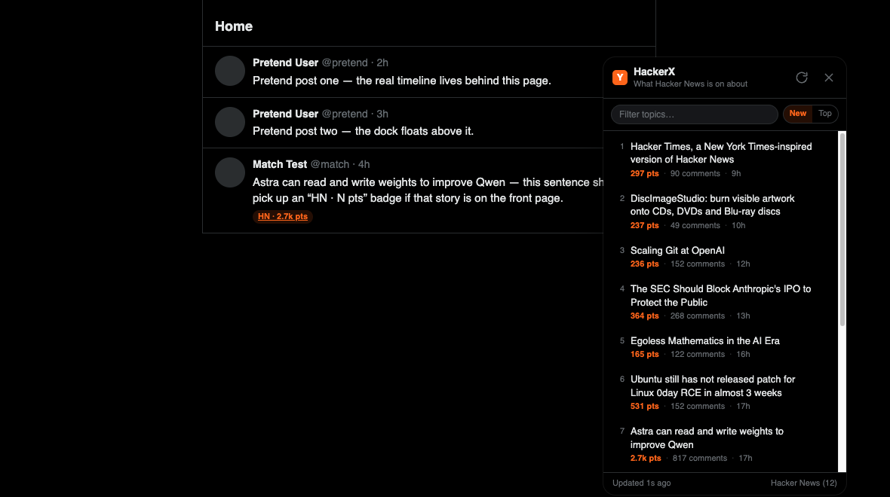

A Chrome extension that puts the Hacker News front page beside your feed — newest first — and opens the live X posts for any topic in one click.

Hacker News is the highest-signal filter on the web. x.com is where the argument happens. This connects the two without scraping either one.
Rows sort by HN post time by default, and each one opens
/search?f=live — X's own live tab, its native renderer, its native order.
Titles are reduced to a 2–3 term X query by a deterministic scorer that keeps versions,
C++-style operators and proper nouns.
Posts that match a live topic get a small HN · N pts chip linking to that search. Toggle it off in the popup.
Filter the list, switch to most-points order, drag the dock off the trends column, double-click to snap back, or Escape to hide it.
Nothing is read from your account and no x.com endpoint is called. The only network request is to the public Hacker News API.
Plain ES modules and one classic content script. Load the folder unpacked and it runs;
dev/harness.html exercises it without a login.
Chrome, Brave or Edge. Takes about twenty seconds.
chrome://extensions and switch on Developer mode.
HackerX folder.
git clone https://github.com/MlLearnerAkash/HackerX.git
cd HackerX
# then: chrome://extensions → Developer mode
# → Load unpacked → choose this folderMinimum points, how many topics to show, default order, which side the dock starts on, and whether timeline badges are on. Changes apply to open x.com tabs immediately.
The service worker is the only component that touches the network. Results are cached for five minutes, so repeated x.com navigations cost one request.
x.com content script src/content/ui.js
│ chrome.runtime.sendMessage
▼
service worker src/background/service-worker.js
│ 5-minute cache in chrome.storage.local
▼
Hacker News Algolia API → src/lib/hn.js normalise stories
│
▼
src/lib/topics.js title → X search query
│
▼
x.com/search?q=…&f=live → X renders the posts itself
Show HN: prefixes and trailing publication names are stripped, stopwords and
generic tech words are dropped, then the remaining terms are scored. Hover any row to see
the exact query.
The panel lives in a shadow root, so x.com's stylesheet cannot reach it and it cannot restyle x.com.
Timeline decoration only ever inserts a chip after the post text. It never reorders, rewrites or removes anything X rendered.